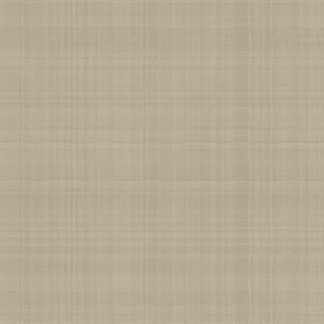
Base color
sRGB · RGB8
4096 × 4096 · 2.91 MiB
SHA-256
af1df4ef1b82b7e013af113d76d364223d80f19c78988fd7607c8c692246dcffRebuilt suite / 10
Fine plain flax weave with 120 variable yarns per tile, continuous over-under bending, fibrils, attached slubs and real transparent inter-yarn openings.
The specimen and matched surface proof are different presentations. Native texture resolution does not determine render resolution.

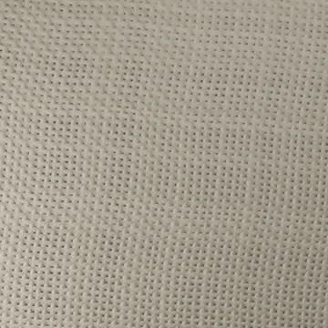
Specimen: Blender 4.5.3 LTS · CPU · 768 maximum / 128 minimum samples · adaptive threshold 0.005 · denoising: false · AgX.
Specimen manifest · Matched-proof manifest · Editable specimen scenes · Renderer source · Review and remaining limits
Specimen SHA-256 4680a884312b24b3c2387801c3a56847518af345f980d9f2711b2f94aee96152
Proof SHA-256 886bcd2920105009e2ec1ffe6ed6852e0c58d5ab96fc737598e08c2270b7cada
Base color uses sRGB; data maps use linear / Non-Color. Displacement in meters = (height − 0.5) × 0.00065. Pair macro height with residual normal for geometric displacement, or use the full normal without macro displacement.
Previews below are reduced display copies. Each link opens the unchanged native 4096 × 4096 map.

sRGB · RGB8
4096 × 4096 · 2.91 MiB
af1df4ef1b82b7e013af113d76d364223d80f19c78988fd7607c8c692246dcffLinear · Gray8
4096 × 4096 · 1.26 MiB
02dc7069de842dc811871d89c62ded0bbd6b48a9fd627235a0158a363d1e8a0a
Linear · Gray8
4096 × 4096 · 0.02 MiB
334c4a79f661f8f9c215b7fd06284d5fb3fe7fd3822f10dc8842f85f664c9a7f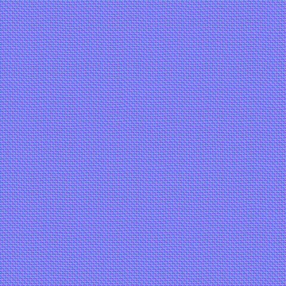
Tangent space · RGB8
4096 × 4096 · 19.11 MiB
bda68e61b6d6766190f75caf5035585ea156cd4ab25713b57f61a7a2ba5bb609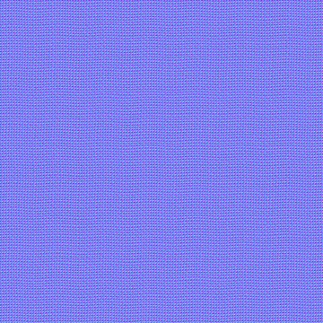
Tangent space · RGB8
4096 × 4096 · 19.06 MiB
886cbcb629d532ac837ac42e8935b7f41068a1d99d0d0da5c11e5cea19ee9abe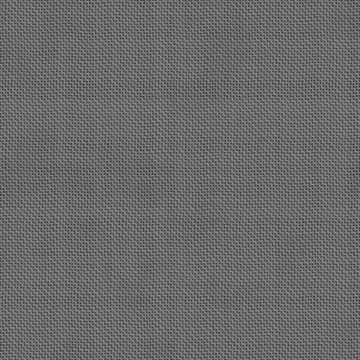
Linear · Gray16
4096 × 4096 · 23.48 MiB
13ff1725058ca47fd380f09cae2b0649b5bc1d8299d2a8478119ca8b63c7692d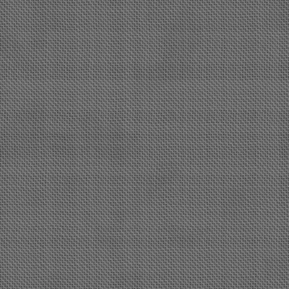
Linear · Gray16
4096 × 4096 · 23.82 MiB
d879759200995588b3f9d493711dc3fede0af0aee0642660512db60fddf10e17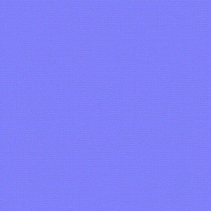
Tangent space · RGB8
4096 × 4096 · 21.84 MiB
5773655c44f13407146a2a3fdc81d8ba875e611abbd6ace32eec47bd9d418b07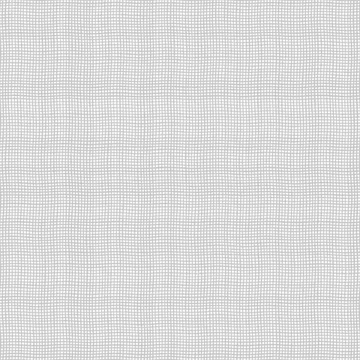
Linear · Gray8
4096 × 4096 · 3.31 MiB
f4fe1b425aa1ae2c95def3909d1d12b521908b596fd52bef57aa27c84062f44f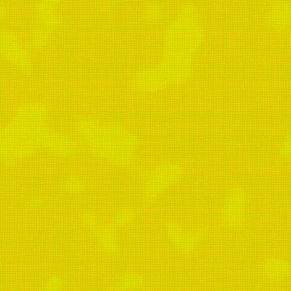
Linear · R: AO / G: roughness / B: metallic
4096 × 4096 · 5.91 MiB
a3ec9003251468dbaf51a6e5eee7fca8e1261bbd21cac5d6607763a1d92d1b5d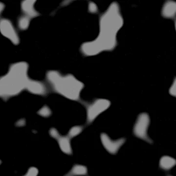
Linear · Gray8
4096 × 4096 · 0.65 MiB
d662006d12328d1c6389dc9c6ff1cb430875c9372c1975f1413034377239538b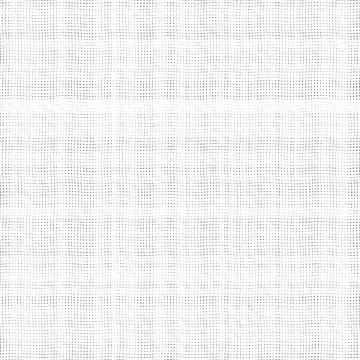
Linear · Gray8
4096 × 4096 · 0.57 MiB
e0ae4fc0ed9327813b59f1e9b5225eb7aa423c01b12c9b1d2dc40fef3da3e12dProcedural anatomy and finish models use artistic physical estimates. These are not measured scans or calibrated reflectance data.
Physical material metadata · Original appearance comparison · Preserved baseline evidence